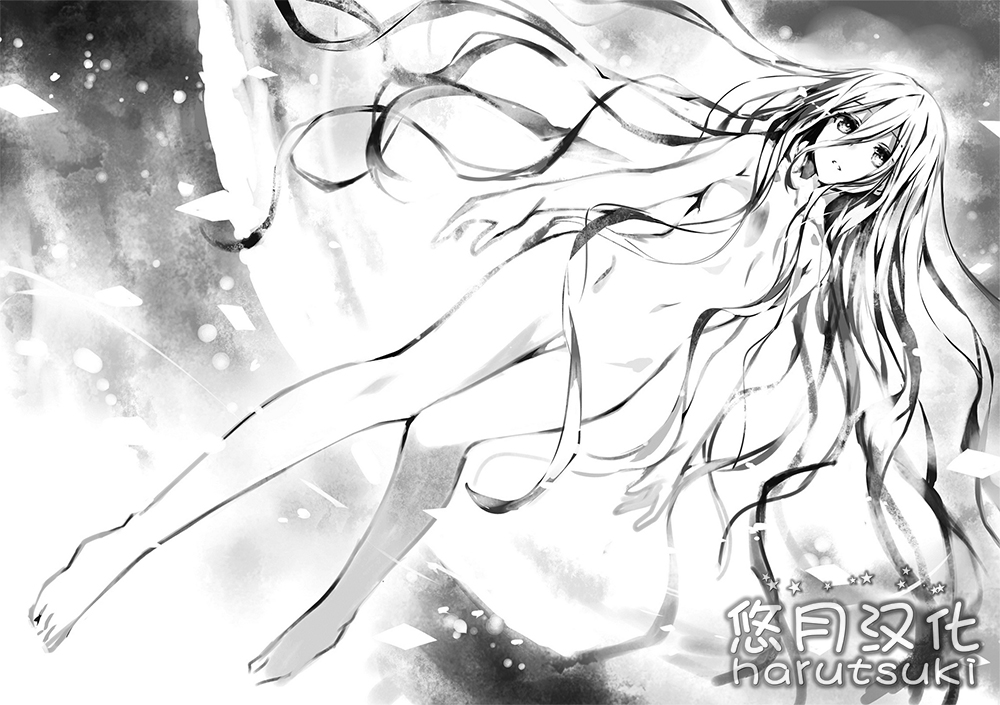

「……呀！呀！」
山间的小村子。在其不远处的花丛之中，娇小的少女拼命地向前伸着手。
她是个有着淡金色的头发，宛如深邃大海般的碧眼，年龄大约七岁的女孩子。不知道是不是因为从刚才开始就倾注了全身的力气，她那与头发同样缺少色素的脸颊染上了红色，额头上浮现出了豆大的汗滴。一副脸马上就要涨破的样子。
「所——以——说——。就算你这么使劲也是没有用的。心里面要更加平静，就像是温柔地去触摸一样的感觉。」
看着这样的少女，旁边的看上去十分活泼的少年叹着气耸了耸肩。
「看好了。」
少年这么说道，随后突然眯起了眼睛，伸出了一根手指。
然后下一个瞬间，从周围的花朵之中慢慢地出现了闪耀的光芒，徐徐地向着少年所指的方向移动而去。
「哇……」
少女紧紧地盯着这样的光景，之后再一次紧皱着眉头开始震动全身。
「唔呶呶呶呶呶呶呶呶呶呶呶呶……！」
「不，所以说呀。」
看着没有任何改进的少女，少年半睁着眼。
在这时，后方传来了呼唤二人的名字的声音。
「——艾略特，艾伦。原来你们在这里吗。」
「嗯？」
「噗哈……」
少年——艾略特回过了头，少女——艾伦将憋着的一口气吐了出来。
一眼看去，在那里的是不知道什么时候出现的，纤细的少年的身影。
那是位以暗淡的灰金色头发为特征的少年。年龄应该是比艾略特小一岁的十岁，但是不知道该说是老成还是什么，他散发着一种十分狡猾的氛围。
「艾克！」
看到他的身影，艾伦的表情闪亮了起来。被称作艾克的少年温柔地微笑着走向了二人。
「你们两个，又在这种地方练习吗？」
「没有办法呀。艾伦这个家伙总是不能成功。明明卡莲那么优秀，为什么姐妹间会有这么大的差距呢。」
艾略特无奈地说道，艾伦的眼角浮现出大颗的泪水开始抽泣起来。
「……就算这么说，我也不是因为喜欢才做不到……」
「啊真是的，不要哭啊！抱歉抱歉，是我不好！」
艾略特道歉之后，艾伦用手背擦去了眼角的泪水，并断断续续地啜泣着。艾克温柔地抚摸着艾伦的脑袋。
「没关系的哟，艾伦。我也会帮助你的，去修炼场吧。喂，艾略特也是，在外面进行魔力的可视化的话可是又要惹老师生气了哟？」
听到艾克的话，艾略特叹息着抱住了胳膊。
「是是。毕竟大人们都是胆小鬼呢。明明不会有自愿跑到这种偏僻的地方的家伙的说。」
「嘛，不要这么说嘛。也是没有办法的呀。毕竟在老师他们那一代，对魔术师的迫害非常严重呢。」
说着，艾克露出了苦笑。艾略特也又一次叹了口气。
——『魔术师』（Magus）
没错。在世界上，被这样的称呼的人们是存在的。
有时候叫咒术师，有时候叫占卜师，有时候叫药师，还有时候被称作魔女，在常人的认知之外，他们一直存在着。
虽说如此，但他们并不能像童话故事里的魔法使一样，只要挥动魔杖就能够引发任何期望的事象。
魔术就是，有着能够见常人所不能见，触常人所不可触的素质的人，为了提高其能力所钻研的学问，是一个文化体系。
然后艾略特他们就是继承了这份魔术师素养的一族的末裔。
「话说回来。再怎么说也太胆小了吧？老师他们的话就算和普通人打架也不会输的吧。」
「嘛，是呢。」
「是吧？那样的话就算被看到了——」
「但是，那只是一对一百的情况，如果是一对一千的话不就另当别论了？」
「这个……唔……」
「就是这个道理。人类会对与自己不一样的东西感到恐惧。而恐惧会孕育出暴乱和疯狂。无知其实是胜过一切的美德啊。」
「额，完全听不懂你在说什么。」
艾略特说着一下子背过了脸，艾克则露出了成熟的笑容走了起来。
——但是，对于艾略特来说，明白这句话的意义并没有用太长时间。
「啊……啊……」
几个月后。
在山丘之上俯视着被大火焚烧的故乡，艾略特呆然地低声呻吟着。
很明显并不是因为失火或者是烟头什么的原因。是某人在明确的恶意以及杀意的驱使下放了火。
勉强从燃烧的家中逃出来的人们被埋伏在外面的男人们用枪射击，当场倒下了。
虽然根本不知道他们到底是什么人，但是他们的目的是使魔术师们灭绝这件事是毫无疑问的。
「艾略特……艾略特！村子，我们的村子！」
「……不要这么大声，艾伦……」
「可是……！」
艾略特紧紧地抱住了想要再次发出声音的艾伦，他的胸膛被艾伦的泪水完全地浸湿了。和他们一起避难的艾伦的妹妹·卡莲也咬着嘴唇紧紧地抓着艾略特的衣摆。
太过突然的，故乡的丧失。这对于这些年龄仅仅在十岁左右的少年少女们来说，是过分沉重的惨剧。
但是——在这之中，只有一个人。
未见太多狼狈地看着燃烧的村子的少年。
「…………」
艾克他，即使热风扑面也没有将双眼闭上，只是注视着变成了废墟的村子以及被射杀的同胞们。
「艾克……？」
虽然无法看出他此时正在想些什么——但是艾略特在那被火照亮的侧脸上，感觉到了毫无来由的违和感似的东西。
作为人类中的异端的魔术师。即使是在这之中，他也是如同别种生物般的——
「艾略特，艾伦，卡莲。」
这时，像是要打断艾略特的思考一样，艾克叫出了幸存的大家的名字。
「——创造世界吧。将人类放逐，为魔术师而存在的世界。这是由他们开始的。我们没有道理不去做吧？」
接着，他宣言道。
——回想起来，这便是关于DEM社最古老的开端的记忆。
从那之后的十几年。艾略特他们一直埋头于魔术的研究之中。
当然，世间可没有简单到能让十岁左右的孩子活下去。最初的几年必须得依赖于孤儿院才行。
但是，并没有经过多长时间，聪明的美少年艾克就被一对资本家老夫妇看中，而那对老夫妇因为不幸的事故而去世也没有经过多长时间。
结果，得到了大量的资产以及用以伪装的身份的艾克将艾略特他们招进了自己家，在时间允许的范围内尽情的「品尝」着神秘。
神智学。隐秘学。炼金术。还有卡巴拉。从为了向「人类」公开而创作的伪物之中，细心又细心地打捞着『真实』。
然后——那个时刻终于来临了。
——那一天。
在欧亚大陆的中央地区，风如同预示着暴风雨的到来一般静静的。
三个身影站在原野之中。
艾克，艾略特，艾伦。
成长的与那个时候几乎完全不同的三个魔术师聚集在了这里。
「——那么，开始吧。卡莲，准备。」
「是的。」
回应艾克的话，从通信机中传出了位于观测所的卡莲的声音。
与此同时，呈圆形摆放的装置——魔力炉，伴随着低沉的轰鸣声开始启动。
从天空之中，从大地之中，从空气之中。
寄宿于构成世界的万物之中的能量（魔力），化作闪耀的光芒在周围涡卷起来。
——『精灵术式』。
这是艾略特他们为这个仪式所赋予的名字。
将存在于世界上的魔力集中在一点，从而创造出新的生命。
然后通过汲取其力量，只能够依赖书本或者咒文操纵微弱的魔力的艾略特他们就能够成为存在于空想世界之中的全能的魔法使。
「艾克，这下——」
「啊。精灵就会诞生。——伴随着笼罩世界的新世界。」
听到艾伦的话，艾克嘴角上扬，这么说道。
「——随意领域。将人类所想的事情变为现实的，万能的空间。计算正确的话，现在即将出生的精灵所带有的那个空间，规模应该足以将地球全部笼罩进去。这个规模已经应该被称为另一个世界——邻界了。」
艾克将向前伸出的手握成拳头。
「那就是，我们的世界。我们要用邻界，来替换掉这个世界。」
「…………」
艾略特听着他的话语，看着他的侧脸，咕噜地咽了一口口水。
事到如今他并没有要对艾克所说的事情提出异议的打算。因为为了眼前的景象，艾略特他们已经耗费了十几年的光阴。
但是，为什么呢——
诉说着希望的艾克的侧脸和那一天看到的侧脸重合了。
「——到时间了。预测到精灵出现的时候会产生余波。艾略特，准备护符。」
「……啊。」
艾略特的肩膀微微地颤动了一下，取出护符开始收集魔力，制作出了一个覆盖住三人的障壁。
下一个瞬间。
「————！」
伴随着剧烈的冲击，视野之中染上了纯白。
明明已经张开了障壁但是震动依然传遍了全身，一瞬间连耳朵都听不见了。
就像是产生了头顶的正上方落下了一枚导弹的错觉一样，规模无与伦比的大爆炸。一股地面被掘起，自己和障壁一起下落的感觉袭向了艾略特他们。
「哈啊……，哈啊……」
片刻之后，因为震动终于消失了，艾略特解开了障壁。
然后在等待着烟尘散去的时候他看向了周围——并失语了。
什么都，没有了。
田野，群山，以及曾经能够远远看到的城市的轮廓。
全部，所有的一切都消失了。
不对——准确的说的话，还有一个东西在。
迄今为止都未曾存在的东西在艾略特他们的面前，漂浮着。
「……噗，哈哈，哈哈哈哈哈哈哈哈哈哈。」
艾克的笑声在空无一物的大地上回荡着。
——那是，一位少女。
全身被淡淡的光辉所缠绕的美丽少女出现在了那里。
——精灵。
这便是，跨越时间长河的因缘，所开始的瞬间。
